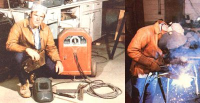

It's the busiest time of the year, and (wouldn't you know it?) the lift arm on your tractor just snapped in the middle. The welding shop is (as always) booked solid for a week, and (naturally) the spare parts aren't available at the tractor store.
Both you and your neighbors can reap the benefits when you obtain the proper welding equipment and a little skill.
Sound familiar? Probably so, because such problems beset most farmers and homesteaders all too often. However, by learning to weld, you can eliminate some hassles from your life . . . cut down on the amount of waiting your neighbors have to put up with .. . and fatten your wallet in the bargain!
Though the name always makes me think of a mysterious movie serial invention, "buzz box" is actually the slightly unflattering term for the tool properly called an electric arc welder. Now I'm not talking about the 110-volt "toys" you can buy through auto stores . . . nor do I mean the high-powered expensive outfits you see at the professional welding shop. Instead, a buzz box is a compact, 230-volt unit that's just the right size for the farmer and the medium-duty user.
When buying such a tool, it's usually best to steer clear of store brands, because they're often made by the least expensive bidder, and six months from now another manufacturer may be making the same brand but with different specs . . . meaning that spare parts for your model won't necessarily be available for long. Rather, purchase a brand name (consider Lincoln, Hobart, or Miller, among others) welder from a company that's been in the business for many years.
With those thoughts in mind, then, put about $200 in your pocket and head to a welding supply dealer. You could probably save a couple of bucks by going to a tractor sales place or a discount operation, but the folks at a specialized welding supply store will be able to give you tips on the art of welding . . . and their advice will usually be worth the few extra greenbacks. [EDITOR'S NOTE: Many county technical schools and adult education programs offer inexpensive courses in welding.]
It seems that almost every welder manufacturer has its own way of varying the amperage on the machine it makes. All of the various techniques work well, though, so just make sure your unit can operate at a high of around 200 amps and is variable to at least as low as 70. (As an example, my welder's capability ranges from 40 to 224 amps.)
You'll see both AC and DC units on display, but I suggest that the part-time "metal melter" avoid DC equipment. If you later decide to go into welding full time, however, then do investigate DC tools when you move up to your next machine.
Some units will be sold complete with all the accessories you'll need to begin welding, but others won't .. . and buying the additional equipment separately can add a good bit to your start-up cost. Soin order to know what you are (and aren't) getting and what else you might needlet's review . . .
A head shield, which is also sometimes called a helmet or face guard, protects your eyes and face, and shouldn't cost more than $20. The glass used in such de vices is very dark, because the light produced while welding is extremely brilliant and can easily cause eye damage. (In fact, the arc is so much stronger than the light given off by oxyacetylene welders that the little glasses used with that equipment won't be enough to safeguard you when using a 230-volt unit. Remember, too, that bystanders should never stare at the arc . .. no matter how much the light draws their eyes.) An arc welder can also give you a "sunburn", and the sparks are-of course-dangerous in their own right. The mask portion of the head shield provides protection against both hazards.
You'll also need a natural-fiber cap to keep sparks away from your head and hair. Polyester and other man-made fabrics tend to melt and drop hot little globs of molten material. Make sure, then, that your head covering is made of a natural fiber such as cotton.
Good leather gloves are necessary, so don't skimp in this department. Get a pair that go past your wrists, and make certain that they fit loosely enough to be flipped off with a flick of the hand. (The first time you pick up a piece of hot metal, you'll understand why that's important.) I'd advise that you invest in a leather apron, too.
Welding rods (electrodes) are essential, of course. Start with E6011 rods, which give good penetration in rusty metal and are considered to be fine general-purpose electrodes. And since you'll almost certainly be working with different thicknesses of metal, get two pounds each of 118", 5132", and 3116" diameter. (EDITOR'S NOTE: If you have difficulty locating a welding supplier who will sell small quantities of rods, you may want to find someone who's willing to split a 50-pound box of electrodes with you . . . or, as an alternative, you can purchase a few pounds of E6013-also a general-purpose rod from Sears, Roebuck and Co.]
Besides welding, your machine can be used for cutting metal. For this purpose it should be equipped with a rod designed for DC, which-though it won't weld on AC-will melt through metal when used on high amperage. The cut won't be as clean as would one made by a gas cutter, but it'll be adequate for most purposes. To handle cutting chores, pick up a couple of pounds of 5/32"-diameter E6010 rods.
If you're able to invest an extra $25 or so, you can get a very handy carbon arc torch, which produces a tremendously hot arc between two carbon rods (hence the name) and can perform some tasks usually reserved for oxyacetylene outfits. It can be used for brazing, for instance ... a process which is akin to soldering but stands up to higher heat. (You'll really appreciate this feature the next time you put a gash in your tractor's oil pan.) You can also use it to heat metal to the nearmelting point, so that it can easily be formed. If you decide to add this device to your growing welder's shop-and I strongly recommend that you do-buy a pound of 1/8"-diameter brazing rods, which will set you back about $7.50.
Once you've gotten your goods together, sit down and read the unit's instruction book ... completely. And when that's done, reread it ... seriously. Your money's invested, so don't take a chance on ruining the expensive equipment through haste and misuse.
Now, get dressed in some old togs, but don't forget your body is going to be just as close to those sparks as your head, so stick to natural fabrics. Note, too, that pockets and cuffs are dandy places for sparks to land and stay . . . straighten out any cuffs on your work outfit and either remove the pockets or sew them shut.
Remember, too, the first law of welding: "Sparks are attracted to gaps in the sides of lowtop shoes with a strength greater than iron's attraction to a magnet." Play it safe. . . wear boots.
Your work site will-of course-need a 230-volt, 50-amp electrical outlet. Therefore, if it must be wired to accept the welder, make certain the wire is of the proper gauge. (Information on the required diameter should be in your owner's manual.) Don't be a miser here, because a wire that's too thin not only violates most codes, but will also shorten the life of your electric welder and could burn down your workshop!
Furthermore, welding rods are coated with compounds that restrict the access of oxygen to the weld and aid in the flow of the metal-These materials give off gases that can be dangerous in an en closed area, so be sure your workplace is well ventilated.
Don't, however, let my warnings fright'en you away from welding. It's a safe pur suit if (and this is true of most workshop activities) it's handled with a little common sense. Just follow the foregoing rules, and then keep your work area clean (flammable items have a terrible tendency to burn when they're attacked by a redhot spark). With that all taken care of, you're . . .
Well, at least you're ready to practice. If you start right to work without going through the exercises in your welder's instruction manual, you may get some good-looking welds, but odds are they won't hold up to any stress. It's the penetration of the weld-not the way it looks on the surface-that's meaningful. Avoid the agonies of failure . . . practice.
Be sure, too, that you learn and observe the "duty cycle". It's covered in your manual, but many machines are destroyed by folks who fail to pay attention to this rule. Electric arc welders' ratings are based upon a period of ten minutes. During that time you can weld some, and then you have to let the machine cool off. Your unit will most likely have a duty cycle of 20%. Simply put, that means you have two minutes of welding and eight minutes of cooling during each ten-minute period.
It may seem impossible to get anything done under such a system .. . but you'll find that setting up, moving around, and checking over your work (all of which can be done while the machine "relaxes") will take much more time than does the actual welding.
Keep in mind, too, that the duty cycle is not cumulative: You can't weld for four minutes straight and then cool for sixteen without shortening the life span of your machine.
Anyone who's lived in a rural area knows how fast news can travel in the country . . . and word of an available welder breaks all records in getting around. Soon your neighbors will be digging out all those items that were destined for a trip to the welding shop but somehow never got there. And, besides fixing broken steel objects for such folks, you canwith special electrodes-repair stainless steel and cast iron, or even put a hard surface on a plow.
Now bartering is about the friendliest method of handling payments for your services, but-at least once in a while-you'll probably want to set a fee. The easiest way to establish your price is to check out what the commercial shops in your area charge, and cut a couple of bucks per houroff that figure.
Naturally, you'll often be tempted to be bighearted and do a job for free, and-if you don't care about the cost of welding rods, electricity, and wear and tear on your machine-that's your privilege. But if you want your buzz box to help you gain financial independence, charge a fair price. In fact, those of you with an entrepreneurial bent will probably want to . . .
After you've honed your welding skills, there's no reason not to venture past repair work and go into manufacturing. If you have a little skill as a scavenger, you can produce working farm equipment from junk and scrap . . . sell those implements for far less than the cost even of used ones . . . and still make a good profit. In fact, if you have design skills and an inventive mind, there's hardly any limit to how far you can go in this area. And should you lack those qualities, instructions are available for making almost any kind of equipment. [EDITOR'S NOTE: You might want to check out the plans featured on pages 152-153.]
Of course, by simply sifting through this and other issues of MOTHER, you'll be able to turn up instructions for making log splitters, composters, stoves, and the like. Or, if you want to tackle something like a trailer, or perhaps a posthole digger, you might order Arc Welded Projects for School and Farm ($3.00) and Arc Welding Projects, Volume 2 ($5.00) from the James F. Lincoln Welding Foundation (Book Division, Dept. TMEN, P.O. Box 17035, Cleveland, Ohio 44117). These will be sent postpaid, but the company accepts only money orders. (There's a 10% discount on purchases totaling over $20, though.)
You can see, then, that buying an electric welder is a wise investment. As a forhire fix-it person, you'll find that the unit will not only pay for itself, but contribute to your upkeep as well. And-especially if you go the whole route and become a manufacturer-the buzz box can even set you up in an independent part-time business.
The commercially available gasoline, diesel, and (with some conversion) alcohol-powered welders are actually no less than high-quality generators ... which come equipped with electric arc welders. The price of such items (starting at around $800) is comparable to standby generators of equivalent output. Thus, if you need a generator-even if you don't plan to weld-the units are definitely worth considering. They're built to commercial standards and can take abuse that a home standby generator just can't handle.
The dual-purpose tools also come in handy if you don't have 230-volt service available where you plan to weld, or when you have to do on-site welding. And besides giving you that freedom, these welders usually offer more features than does a less expensive buzz box .. . such as higher duty cycles, higher amperage, and both AC and DC w elding capabilities.
|
 |
|
|